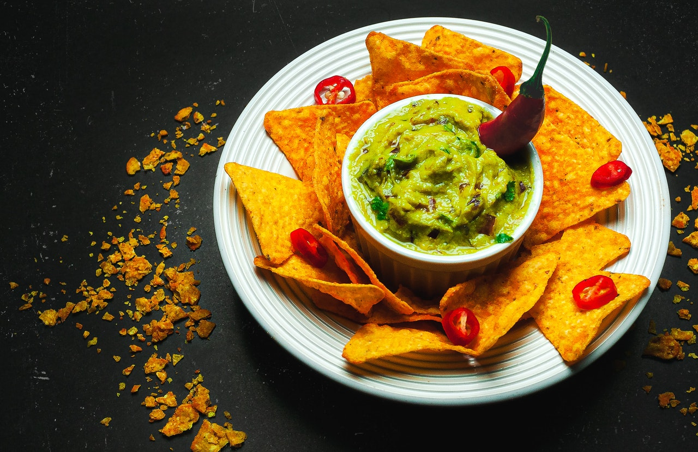

Guacamole
Tempo total: 20min | Dificuldade: Fácil | Porções: 6
Ingredientes
- 1 abacate picado
- 1 cebola roxa picada
- 2 tomates sem sementes picados
- 2 colheres (sopa) de azeite
- suco de 1 limão
- pimenta dedo-de-moça, sem sementes, picada
- 2 colheres (sopa) de coentro picado
- 1 pacote de nachos
Modo de preparo
Em um recipiente, misture bem todos os ingredientes. Sirva com os nachos.